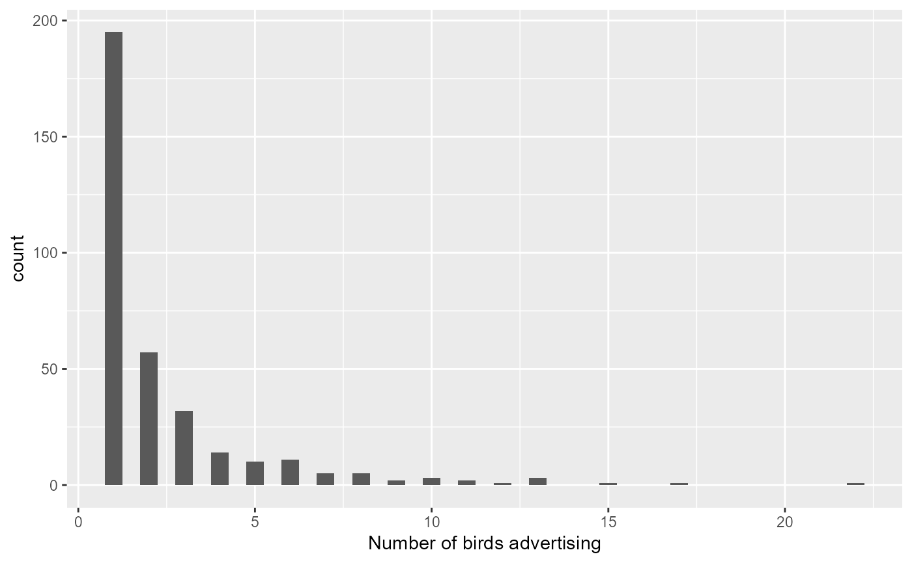
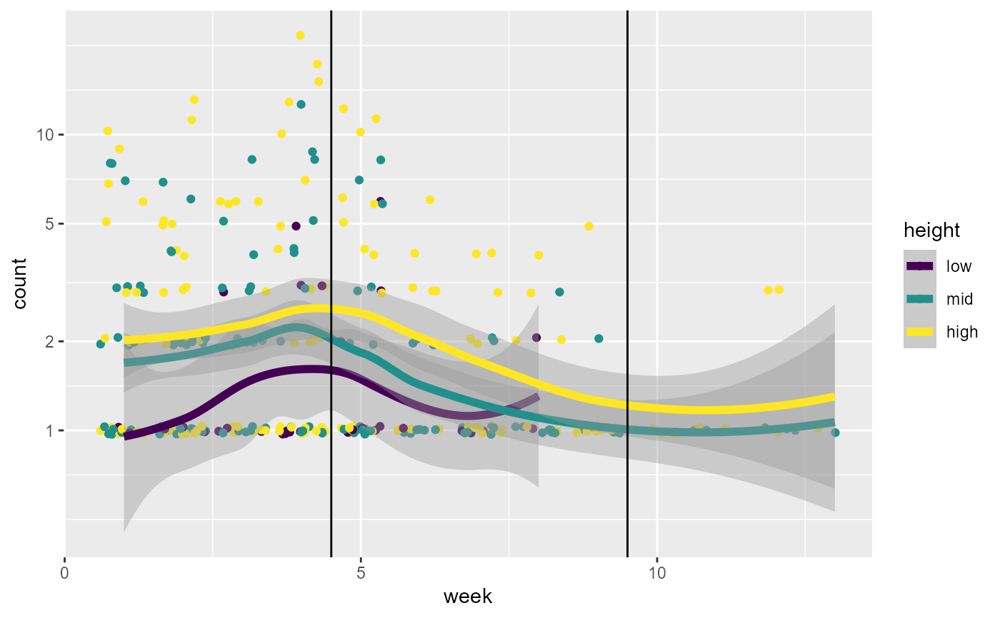

Advertising Behavior by Males Cormorants
Cormorants.RdMale double-crested cormorants use advertising behavior to attract females for breeding. In this study by Meagan McRae (2015), cormorants were observed two or three times a week at six stations in a tree-nesting colony for an entire season, April 10, 2014-July 10, 2014. The number of advertising birds was counted and these observations were classified by characteristics of the trees and nests.
The goal is to determine how this behavior varies temporally over the season and spatially, as well as with characteristics of nesting sites.
Usage
data("Cormorants")Format
A data frame with 343 observations on the following 8 variables.
categoryTime of season, divided into 3 categories based on breeding chronology, an ordered factor with levels
Pre<Incubation<Chicks PresentweekWeek of the season
stationStation of observations on two different peninsulas in a park, a factor with levels
B1B2C1C2C3C4nestType of nest, an ordered factor with levels
no<partial<fullheightRelative height of bird in the tree, an ordered factor with levels
low<mid<highdensityNumber of other nests in the tree, an ordered factor with levels
zero<few<moderate<hightree_healthHealth of the tree the bird is advertising in, a factor with levels
deadhealthycountNumber of birds advertising, a numeric vector
Details
Observations were made on only 2 days in weeks 3 and 4, but 3 days in all other weeks. One should use log(days) as an offset, so that the response measures rate.
Cormorants$days <- ifelse(Cormorants$week %in% 3:4, 2, 3)
Source
McRae, M. (2015). Spatial, Habitat and Frequency Changes in Double-crested Cormorant Advertising Display in a Tree-nesting Colony. Unpublished MA project, Environmental Studies, York University.
Examples
data(Cormorants)
str(Cormorants)
#> 'data.frame': 343 obs. of 8 variables:
#> $ category : Ord.factor w/ 3 levels "Pre"<"Incubation"<..: 1 1 1 1 1 1 1 1 1 1 ...
#> $ week : int 1 1 1 1 1 1 1 1 1 1 ...
#> $ station : Factor w/ 6 levels "B1","B2","C1",..: 3 3 3 3 3 3 3 4 4 4 ...
#> $ nest : Ord.factor w/ 3 levels "no"<"partial"<..: 1 1 2 2 2 3 3 1 1 1 ...
#> $ height : Ord.factor w/ 3 levels "low"<"mid"<"high": 2 3 2 3 3 2 3 2 2 3 ...
#> $ density : Ord.factor w/ 4 levels "zero"<"few"<"moderate"<..: 2 2 2 2 2 2 2 2 2 2 ...
#> $ tree_health: Factor w/ 2 levels "dead","healthy": 2 2 2 2 1 2 2 2 1 2 ...
#> $ count : int 3 2 2 2 1 3 3 1 8 3 ...
if (require("ggplot2")) {
print(ggplot(Cormorants, aes(count)) +
geom_histogram(binwidth=0.5) +
labs(x="Number of birds advertising"))
# Quick look at the data, on the log scale, for plots of `count ~ week`,
# stratified by something else.
print(ggplot(Cormorants, aes(week, count, color=height)) +
geom_jitter() +
stat_smooth(method="loess", size=2) +
scale_y_log10(breaks=c(1,2,5,10)) +
geom_vline(xintercept=c(4.5, 9.5)))
}
#> Loading required package: ggplot2

#> Warning: Using `size` aesthetic for lines was deprecated in ggplot2 3.4.0.
#> ℹ Please use `linewidth` instead.
#> `geom_smooth()` using formula = 'y ~ x'

# ### models using week
fit1 <-glm(count ~ week + station + nest + height + density + tree_health,
data=Cormorants,
family = poisson)
if (requireNamespace("car"))
car::Anova(fit1)
#> Analysis of Deviance Table (Type II tests)
#>
#> Response: count
#> LR Chisq Df Pr(>Chisq)
#> week 62.791 1 2.298e-15 ***
#> station 14.068 5 0.01518 *
#> nest 137.812 2 < 2.2e-16 ***
#> height 47.988 2 3.797e-11 ***
#> density 47.266 2 5.450e-11 ***
#> tree_health 0.070 1 0.79199
#> ---
#> Signif. codes: 0 '***' 0.001 '**' 0.01 '*' 0.05 '.' 0.1 ' ' 1
# plot fitted effects
if (requireNamespace("effects"))
plot(effects::allEffects(fit1))